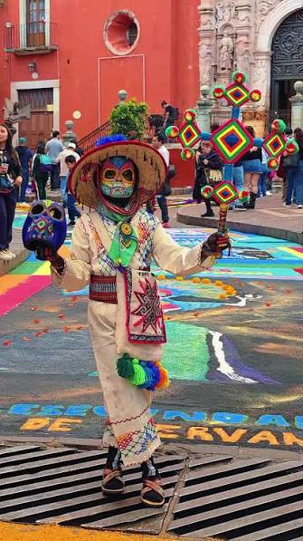
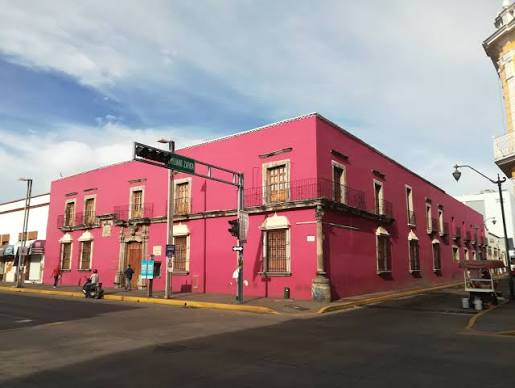
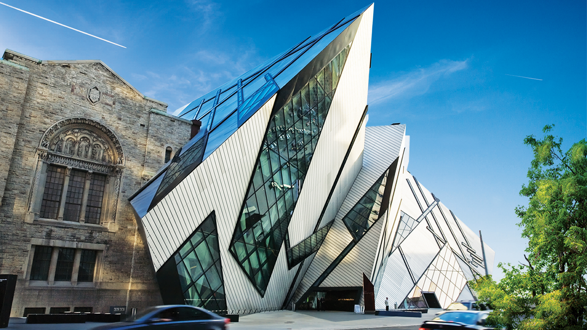

Tepic & Toronto
¿Por qué elegir entre dos lugares cuando podemos aprender de ambos?

Tepic, Nayarit
Una ciudad donde la historia regional, los pueblos originarios y el entorno natural forman un arraigado sentido de pertenencia.
Toronto, Canadá
Una metrópoli multicultural construida a partir de la diversidad internacional y la convivencia de múltiples orígenes.
1. Conociendo a nuestras ciudades
Tepic: Lugar de piedras macizas
Origen: Su nombre proviene del náhuatl, asociado a su suelo volcánico y su conexión con el Cerro de San Juan. Habitado antes por coras y wixaritari, fue consolidado como Tepic en la época colonial y capital de Nayarit en 1917.
Geografía: Se encuentra en un valle a 915 metros sobre el nivel del mar. Posee un clima templado subhúmedo y veranos lluviosos marcados, rodeada de cerros volcánicos.
Toronto: Lugar de encuentro
Origen: Su nombre proviene de la palabra indígena mohawk/huron "Tkaronto", que significa donde hay árboles en el agua. Fue un punto de encuentro y portaje para las primeras naciones.
Geografía: Ubicada en la orilla norte del inmenso lago Ontario, casi a nivel del lago. Posee un clima continental con 4 estaciones muy marcadas: inviernos fríos con nevadas y veranos cálidos y húmedos.
425K
Habitantes aprox. (2020)
2.76M
Habitantes aprox. (2021)
Mapa Interactivo Global
2. La Riqueza de la Diversidad
Raíces y Costumbres (Tepic)
La cultura tepicense se caracteriza por sus tradiciones mexicanas, sus fiestas populares y sus raíces indígenas. Entre sus expresiones culturales destacan la música regional, las artesanías wixárikas y náayeris, así como platillos típicos como el pescado zarandeado, el ceviche y los tamales de camarón.

Mosaico Cultural (Toronto)
Es una ciudad multicultural donde conviven personas de diferentes países y nacionalidades. Esto se refleja en sus idiomas, restaurantes, festivales (como el Toronto Caribbean Carnival o TIFF), música y celebraciones. Ademas, estan completamente enamorados del hockey.
3. Turismo y Experiencias
Tepic combina un centro histórico que se puede recorrer a pie, espacios culturales, gastronomía regional y áreas verdes.
-
Centro Histórico y Catedral
Caminar por esta zona ayuda a conocer cómo conviven los espacios religiosos, comerciales y públicos.
-
Museo Regional de Nayarit
Sus exposiciones presentan objetos relacionados con la historia y las herencias culturales de la región.
-
Casa Museo Amado Nervo
Una oportunidad para acercarse a la literatura y entender la memoria cultural de la ciudad.
-
Parque La Loma y Cerro San Juan
Espacios recreativos y referencias naturales del paisaje nayarita para disfrutar al aire libre.
-
Mercados y Gastronomía
Probar platillos regionales y conversar con comerciantes es una manera sencilla de acercarse a la vida cotidiana.

Toronto se distingue por la combinación de rascacielos, barrios históricos, museos, parques y comunidades de distintos orígenes.
-
CN Tower
Símbolo del desarrollo tecnológico. Sus miradores ofrecen una perspectiva general de la ciudad y el inmenso lago Ontario.
-
Royal Ontario Museum (ROM)
Reúne colecciones de historia natural, arte e historia de culturas del mundo en un edificio moderno/histórico.
-
Distillery Historic District
Antiguos edificios industriales de ladrillo rojo transformados en un espacio cultural con galerías y cafeterías.
-
High Park y Toronto Islands
Las islas ofrecen playas y vistas del horizonte urbano; High Park es un escape natural dentro de la gran ciudad.

4. Vida Cotidiana y Costos
Las dimensiones de una ciudad dictan la forma en que sus habitantes se relacionan. Conoce sus contrastes de movilidad y juega con el presupuesto estimado de un día (Costos referenciales):
Movilidad en Tepic
En Tepic, los traslados suelen ser de menor escala. El transporte se basa principalmente en autobuses urbanos, camiones, combis, taxis y motocicletas. La convivencia diaria se vive en plazas (como la Plaza Principal o la Alameda), parques locales y mercados como el Juan Escutia, favoreciendo un ambiente vecinal y de mucha cercanía.
Movilidad en Toronto
La inmensidad de Toronto requiere una red de transporte masiva operada por la TTC, que incluye metro, extensas líneas de tranvías (streetcars), trenes GO y autobuses. La vida social y multicultural fluye entre grandes parques, inmensas bibliotecas, plazas como Nathan Phillips Square y eventos masivos en sus distintos barrios.
Día Promedio en Tepic
$450 MXN
Transporte público ($30) + Comida corrida/menú ($120) + Cena típica/tacos ($100) + Cine/Recreación ($200)
Aprox. 18-30 € | Moneda: Peso Mexicano
Día Promedio en Toronto
$110 CAD
Transporte TTC 2 viajes ($6.60) + Comida rápida/Food truck ($25) + Cena en restaurante ($40) + Atracción/Extras ($38)
Aprox. 54-88 € | Toronto es 3 a 4 veces más costoso en hospedaje y alimentación diaria.
5. Viajar con Responsabilidad
En cualquiera de las dos ciudades, un buen visitante debe respetar las normas de los lugares turísticos, cuidar los espacios públicos y naturales, y evitar dejar basura. Marca estas recomendaciones para preparar tu viaje:
Visitando Tepic
Visitando Toronto
6. Dos Enfoques, Un Mundo
La comparación no busca establecer una competencia. Sus diferencias no las hacen mejores ni peores; las hacen únicas. Pon a prueba tus conocimientos haciendo clic en los mitos.
Mito: Toronto es la capital de Canadá.
Haz clic para ver...
Realidad
Falso. Toronto es la ciudad más grande, pero la capital de Canadá es Ottawa.
Mito: Tepic es de reciente creación.
Haz clic para ver...
Realidad
Falso. Tepic ya estaba habitado por pueblos originarios antes de los españoles y se fundó formalmente en 1531.
Mito: Tepic no tiene presencia indígena.
Haz clic para ver...
Realidad
Falso. La herencia y presencia de los pueblos Wixárika, Na’ayeri, O’dam y Mexikan es un pilar de su identidad cultural.
La Perspectiva del Visitante: Tepic
Ventajas
- Permite conocer de forma inmersiva la cultura regional de Nayarit.
- Cuenta con atractivos naturales y montañas de fácil acceso cercano.
- Ofrece una excelente gastronomía tradicional.
- Es una oportunidad auténtica para experimentar un ambiente urbano de escala humana y costumbres mexicanas vivas.
Desafíos
- Algunas actividades ecoturísticas en los alrededores requieren transporte particular o planeación.
- La cobertura del transporte público puede limitar a un visitante no familiarizado con las rutas.
- Durante la temporada de verano es indispensable considerar las fuertes lluvias.
La Perspectiva del Visitante: Toronto
Ventajas
- Permite interactuar y conocer una abrumadora diversidad cultural global.
- Cuenta con museos, galerías, arquitectura moderna y espacios culturales de talla mundial.
- Posee una amplísima y eficiente red de transporte público interconectado.
- Brinda experiencias gastronómicas de prácticamente cualquier país del mundo.
Desafíos
- Es un destino significativamente más costoso en hospedaje, vuelos y alimentación diaria.
- Las inmensas distancias metropolitanas requieren mucha planificación para recorrer varios lugares en un día.
- El severo invierno (con nevadas) puede dificultar los recorridos turísticos al aire libre.
7. Reflexión: Otredad y Diversidad
Comprender la Otredad
La otredad es reconocer que el "otro" no es extraño ni inferior, sino una persona con otra historia, otra lengua y otra forma de vivir. Cuando comparamos Tepic y Toronto, no juzgamos quién vive mejor, sino dos formas de hacer comunidad.
En Tepic la otredad se vive en la cercanía: saludar al vecino, compartir, y convivir con las comunidades wixaritari y coras. En Toronto se vive en la inmensa diversidad: caminar por barrios como Chinatown o Little Italy, donde ser diferente es simplemente lo normal.
El Valor de la Diversidad
Abrazar la diversidad cultural nos ayuda a no juzgar desde nuestras propias costumbres. Ambos lugares nos recuerdan (incluso desde el origen indígena de sus nombres) que ninguna ciudad se construye de un solo pensamiento.
Visitar Tepic y Toronto no representa elegir entre dos destinos, sino vivir dos experiencias distintas. Conocer otra ciudad es mirarnos en un espejo diferente: entendemos mejor quiénes somos cuando vemos cómo viven otros. La otredad no nos separa; nos completa.
8. Fuentes Oficiales y Consultas
La información demográfica, turística y de movilidad presentada en este micrositio ha sido extraída de los siguientes documentos oficiales:
- Instituto Nacional de Estadística y Geografía (INEGI). (2020). Censo de Población y Vivienda 2020. México.
- Statistics Canada. (2021). Census Profile, 2021 Census of Population. Datos de diversidad etnocultural y censos metropolitanos.
- City of Toronto. (s. f.). Getting around the city (Toronto Transit Commission), estrategia de arte público y manejo de espacios verdes.
- Gobierno Municipal de Tepic / Visita Tepic. (s. f.). Documentos municipales y referencia turística local.
- Instituto Nacional de Antropología e Historia (INAH). (s.f.). Información cultural e histórica del Museo Regional de Nayarit y los Cinco Pueblos.
- Secretaría de Cultura. (2011). Archivos del Sistema de Información Cultural y Patrimonio regional.